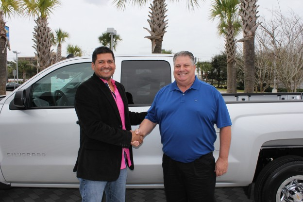
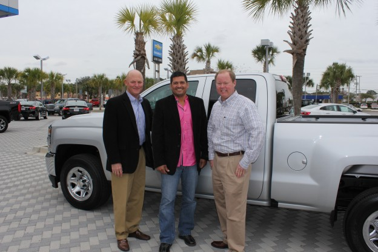

Jinder Pompeyo has been with FRLT for almost 2 years. He is 42 years old, married to his wife Sandra and has 3 grown children, Sabrina, Monica and Carlos. He came to us from a competitor for more security, better benefits and extra compensation. He went into training and was immediately impressed with our methods and commitment to safety. He learned more in a few weeks than he did in his entire time at the other company. He retained what he learned. Being safe and responsible was a great incentive to make a good living. He does not believe in taking chances and looks forward to a long career with FRTL. He likes the friendly culture in Port Ev and is always willing to help out with an extra load or extra day when needed. Being a little bit of a jokester he did not believe he had won the truck. What were the chances his name would be called. It wasn't until we asked him what color truck would he like that he realized he had won. He has always been proud to be a part of such a good company and winning a new truck is just icing on the cake, it reassures him that he made the correct decision to come work for FRTL.
Port Everglades Driver Jinder Pompeyo with his brand new Chevy Silverado

Jinder pictured with his Terminal Manager Mike Denofrio

Jinder pictured between (left) Rob Sandlin, CEO & President and (right) Jim Anderson, VP of Safety & Risk Management